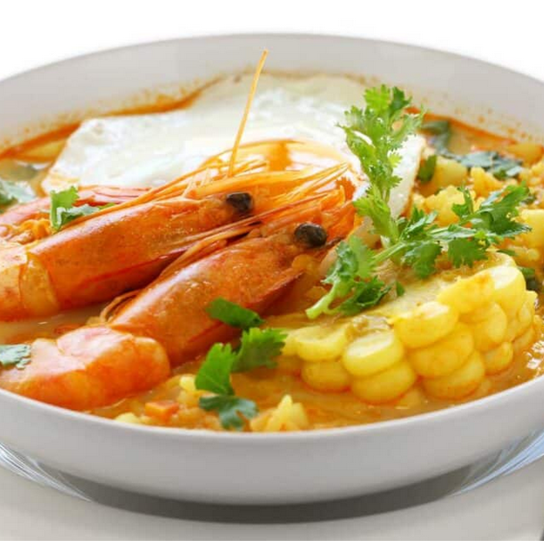
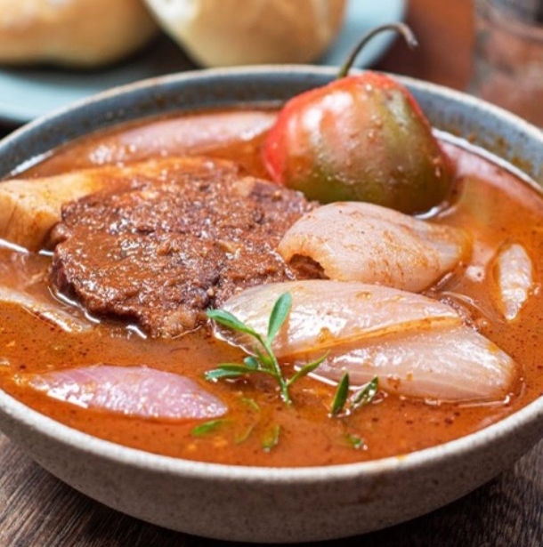
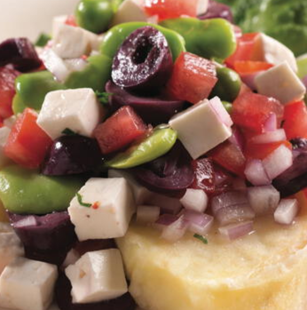
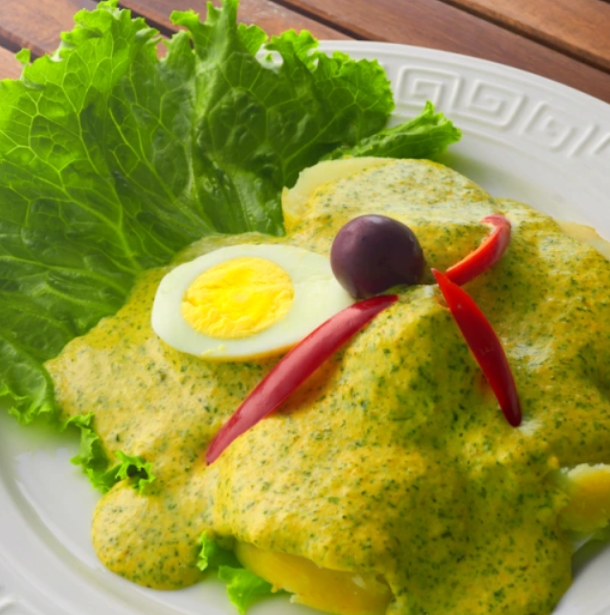

Platos típicos de Arequipa representan la esencia del sabor peruano con una mezcla de tradición, historia y sazón inconfundible. La cocina arequipeña es reconocida por su intensidad y diversidad, heredada de antiguas costumbres mestizas que combinan ingredientes andinos con técnicas coloniales.
Entre los platos más representativos se encuentran el rocoto relleno, el adobo arequipeño, el chupe de camarones y el solterito de queso. Cada uno refleja el amor por la tierra y el ingenio de su gente, convirtiéndose en una experiencia culinaria que ningún visitante debe perderse.
Algunos platos típicos

Rocoto Relleno

Chupe de Camarones

Adobo Arequipeño

Solterito de Queso

Ocopa Arequipeña